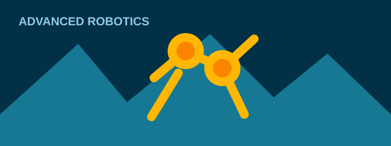

Tecnologías oceánicas
Sistemas autónomos para exploración y monitoreo.
OCEAN · TECHNOLOGY · PEOPLE · IMPACT
Integramos ingeniería oceánica, robótica, inteligencia artificial y sistemas autónomos para resolver desafíos reales.
Sistemas autónomos para exploración y monitoreo.
Robótica, automatización y procesos inteligentes.
Tecnología para un planeta más limpio y resiliente.
De las ideas al impacto tecnológico real.
PROYECTOS DESTACADOS
Monitoreo y exploración en ambientes exigentes.
Inspección, mapeo y adquisición precisa de datos.

Locomoción, control y autonomía para tareas reales.
Modelos y agentes para decisiones de alto valor.
ACERCA DE SEATECH
SEATECH desarrolla soluciones de ingeniería que conectan tecnologías oceánicas, robótica, inteligencia artificial y sostenibilidad para generar impacto en entornos reales.
CONTACTO
Conversemos sobre ingeniería, sistemas autónomos, IA, investigación y desarrollo.